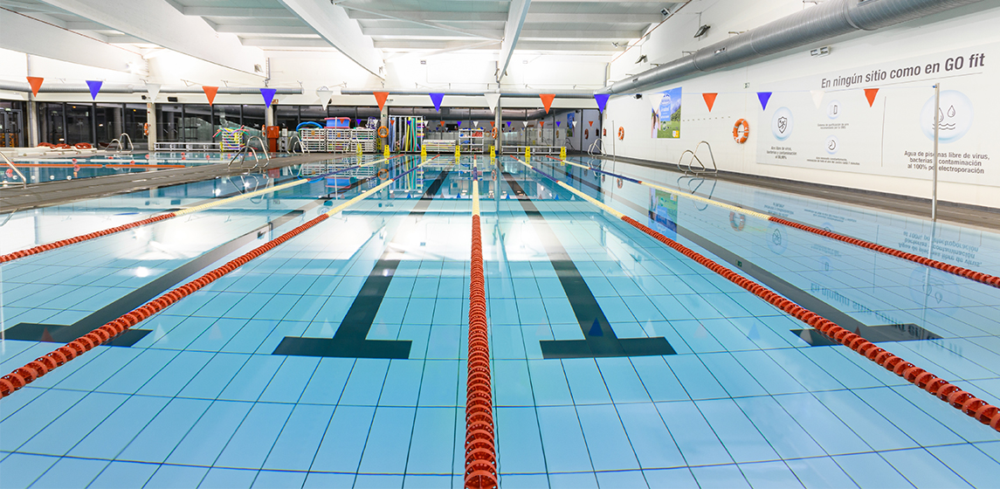
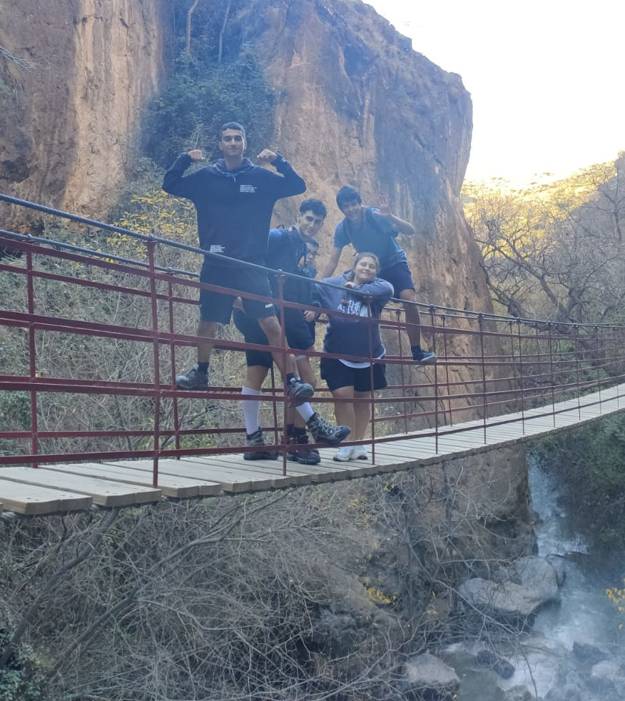
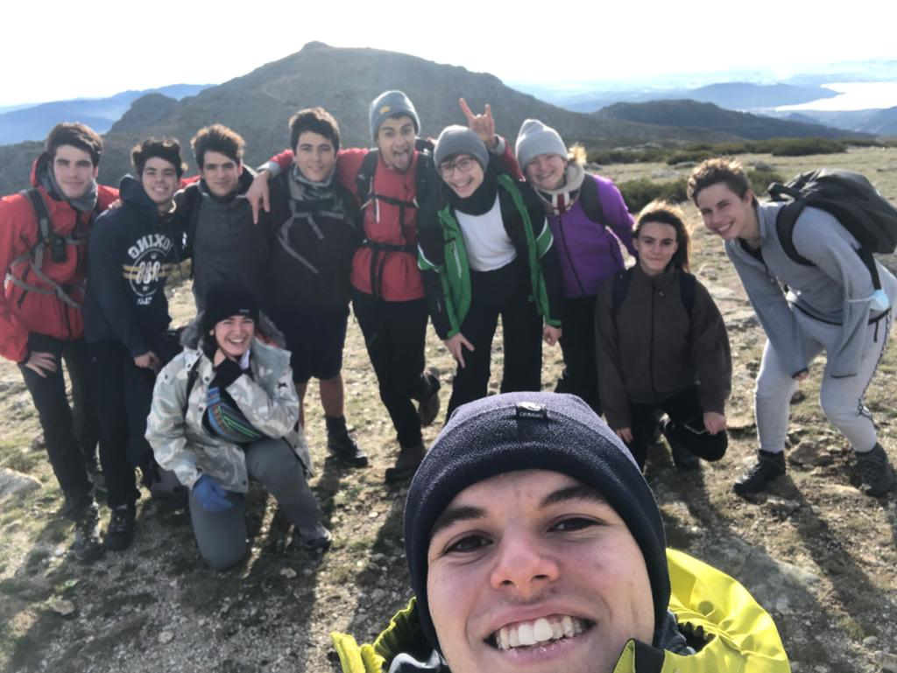
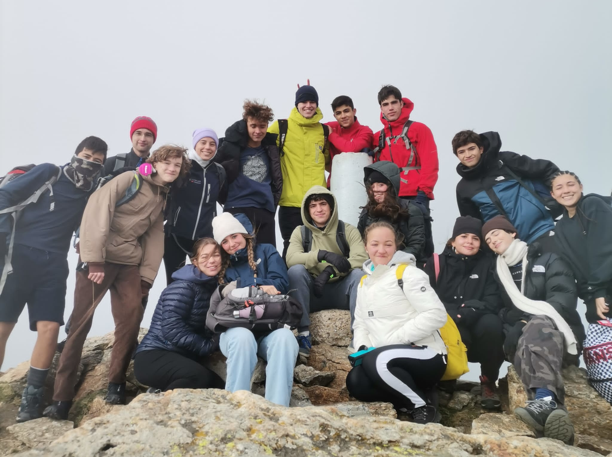

Ruta de la línea 6
El 7 de junio de 2023, nuestra clase decidimos que íbamos a realizar una ruta fuera de lo común: recorrer la línea 6 del metro de madrid entera a pie. Fuimos haciendo fotos a cada de una de las paradas, empezando en la estación de metro y terminando en esta misma. La excursión fue importante para mí porque nunca había caminado tanta distancia en un entorno urbano, además de que pude observar zonas de Madrid en las que nunca había estado antes mientras me ejercitaba. Algunas personas fueron abandonando a medidad que avanzaba la ruta, pero la mayoría no desistimos. El recorrido total sumaba 24 km y el desnivel ±200 m.
Calistenia
Durante todo el curso 2022-2023 estuve haciendo calistenia consistentemente 2-3 días a la semana. Los entrenamientos no requerían ser muy variados, puesto que mi principal objetivo no era ganar masa muscular ni adquirir nuevas habilidades debido a la falta de tiempo. Solo necesité mantenerme en una forma física razonable para mantener mi salud mental y bienestar general, los cuales eran mis principales metas cuando empecé este hábito. Todos los workouts(entrenamientos) son de nivel básico-intermedio y con tres meses de preparación cualquier persona podría hacer cualquiera de ellos.
Aunque anteriormente he mencionado que progresar no era mi prioridad, si que conseguí alcanzar tres progresiones de calistenia que hace tiempo deseaba completar: tuck planche, la L-sit y el pino.
Natación
Solo haciendo 2-3 sesiones de calistenia a la semana, percibía que me faltaba un poco más de actividad física. No quería añadir más sesiones, puesto que me requeriría tener que añadir más entrenamientos. Además, quería obtener los beneficios de la salud que nadar conviene, que son mayores que los de realizar calistenia. Por tanto, acordé que iría a nadar una vez a la semana. El entrenamiento que escogí me lo proporciono el youtuber "skillsNT" y era un modelo para poder nadar 4 km seguidos. Evidentemente, no llegue a esa marca porque tenía poca experiencia y poco tiempo, pero conseguí nadar 1,5 km seguidos lo cual para mí era un logro notable. Entreno en la piscina mostrada en la foto (Gofit Peñagrande).
Ruta los Cahorros de Monachil
En las vacaciones de Navidad, me fue de campamento con los scouts a Granada e hicimos una ruta de 10 km sobre los puentes colgantes en los Cahorros del Monachil. La longitud de la ruta era pésima, pero el resto estaba en que se requería pasar por zonas intrincadas que exigían una coordinación y habilidad superior. Hacer esta ruta me aportó una formación física diferente a cualquier otra ruta de montaña, además de que el ambiente era precioso.
Salida senderismo 20-11-2022
Después de la salida del 6-11, me quedé con ganas de volver a experimentar una excursión con mis compañeros. Además, esta vez se propuso una ruta un tanto más complicada que la anterior. Empezando en Mataelpino y terminando en Navacerrada constaba de 12km de longitud y 1300 m de desnivel, lo cual me incentivó para ir con ellos. Cuando acabé la ruta me sentí realizado, pues desde hace 4 años nunca había hecho una expedición tan difícil.
Salida senderismo 6-11-2022
A lo largo de toda mi vida, las únicas salidas al campo que realizaba eran en compañía de mi grupo scout, y quería probar con algo un tanto diferente como podría ser hacer senderismo con mis compañeros del instituto. En estas salidas pude ejercitar mi capacidad de andar en un terreno difícil y de paso visitar el pico más alto de la comunidad de Madrid, en Peñalara. El recorrido de la ruta era de 12km y tenía 450 m de desnivel. Yo aparezco en la foto a la izquierda del todo.
